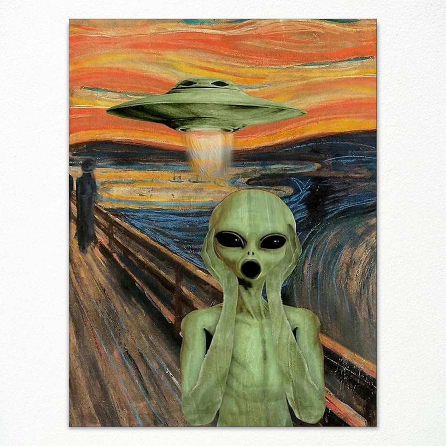

Experimenting with some CSS holographic effects, inspired by this guide from Robb Owen: Holograms, light-leaks and how to build CSS-only shaders.
Unfortunately, this effect relies on background-attachment: fixed; Which doesn't work as expected on iOS Safari.
This effect also relies on scrolling over the images, for the gradient & mask to do its thing. So I have increased the margin on both ends of the demo so you should be able to see it fully.
TL;DR: Scroll.